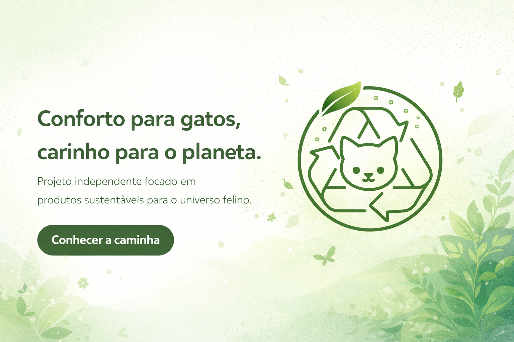

Propósito
Incentivar um olhar mais cuidadoso para o consumo, valorizando criações em pequena escala e com identidade própria.
A Ecopet é uma proposta independente voltada ao universo felino, unindo conforto, estética e consciência ambiental em uma identidade visual leve, autoral e acolhedora.

A Ecopet nasce da ideia de construir algo bonito, útil e mais responsável. Nosso foco inicial está em caminhas para gatos, com possibilidade de expansão futura para novos itens.
Incentivar um olhar mais cuidadoso para o consumo, valorizando criações em pequena escala e com identidade própria.
O projeto é pensado especialmente para gatos, com um visual acolhedor, minimalista e afetivo.
Hoje a caminha é o produto principal. Em breve, outros produtos poderão ser adicionados conforme o crescimento da marca.
Buscamos soluções mais conscientes para o universo pet, com proposta visual ecológica e produção sensível.
Um projeto independente com identidade própria, construído com calma, intenção e personalidade.
Cada produto nasce de um processo atento e humano, pensado para acolher os gatos e comunicar a essência da marca.
Nosso primeiro item foi pensado para oferecer aconchego ao gato e apresentar a essência da marca: conforto, delicadeza e propósito.
Seu apoio fortalece um projeto independente com foco em sustentabilidade, afeto e criação consciente.